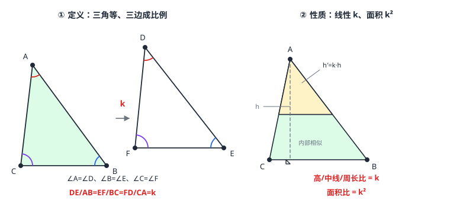

相似三角形的判定与性质
相似是「形状相同、大小可以不同」的精确化：三角对应相等、三边对应成比例，对应边的比值叫相似比 k。判定三条路：两角对应相等（AA，最好用）、三边对应成比例（SSS）、两边成比例且夹角相等（SAS）。相似三角形的性质把「成比例」贯彻到底：对应高、中线、角平分线、周长比都等于 k，面积比等于 k^2。全等是 k=1 的特例——判定定理砍掉一条边条件，是「放宽版的全等」。
| 所属主题 | 相似与投影 |
|---|---|
| 所属模块 | 几何 |
| 课标学段 | 第四学段（7~9 年级） |
| 前置知识 | 平行线分线段成比例、全等三角形 |
| 核心素养 | 推理能力运算能力几何直观 |
教材定位
人民教育出版社《人教版（2024版）义务教育教科书·数学》
九年级下册第31章 相似31.2 相似三角形
对应九下 31.2：判定在 31.2.2，性质在 31.2.3。
说明
相似三角形的定义：三角对应相等、三边对应成比例的两个三角形（\triangle ABC\sim\triangle DEF，注意字母顺序即对应顺序）。这个比值 k=\tfracDEAB=\tfracEFBC=\tfracFDCA 叫相似比——由 \triangle ABC 变到 \triangle DEF 的「放大倍数」。k=1 时三边全等，正是全等三角形（全等三角形）：全等是相似的特例。
判定定理三条：①两角对应相等（AA）；②三边对应成比例（SSS）；③两边对应成比例且夹角相等（SAS）。与全等判定对照：全等要 SSS/SAS/ASA/AAS/HL 五条「等」，相似只要「放宽到成比例」——AA 连边都不看，因为两角锁定形状后，边只能整体伸缩。
性质定理：相似三角形对应高的比、对应中线的比、对应角平分线的比、周长的比都等于相似比 k；面积的比等于 k^2（图 1 右）。为什么线段是 k 而面积是 k^2：长度是一维的、按 k 伸缩一次；面积是二维的、横竖各伸缩一次，乘了两次。
「对应」靠角定位：找对应边之前先锁定对应角——公共角、对顶角、由平行线导出的同位角/内错角（相交线与平行线）都是现成的对应角来源。AA 判定实战里，找到两对角的工作几乎全是「找平行、找公共角」。
使用场景
照片放大：手机拍的一寸照放大成五寸，人物形状不变——所有对应长度按同一倍数拉伸，正是相似变换；放大后面积按倍数的平方增长，所以冲印大照片纸耗四倍不止。
地图比例尺：1:50000 的地形图上任何一小块与真实地块形状相同、长度缩小五万倍——量图上距离乘比例尺就得实际距离，图上三角形与地面三角形相似。
注意点
书写顺序即对应顺序：\triangle ABC\sim\triangle DEF 意味着 A≤ftrightarrow D、B≤ftrightarrow E、C≤ftrightarrow F。写成 \triangle ABC\sim\triangle EFD 对应关系就变了，比例式全错。
AA 的两角必须是「对应角」且三角形中第三个角自动相等（内角和 180^\circ）——所以 AA 也常叫「两角分别相等」，实际只需找两对。
面积比是 k^2 不是 k：k=\tfrac12 的缩小图，面积只剩 \tfrac14——「长度减半、面积缩到四分之一」是刻在定义里的陷阱。
两边成比例且夹角相等（SAS 相似）中，成比例的两边必须「夹着」那个相等的角；角在旁边不夹着，判定不成立。
证明

图 1：左——相似的定义：三角对应相等且三边对应成比例（相似比为 k）；右——性质外推：对应线段（高、中线、角平分线）与周长比都为 k，面积比为 k²
证明
结论 1平行引理：\triangle ABC 中若 DE\parallel BC（D 在 AB 上、E 在 AC 上），则 \triangle ADE\sim\triangle ABC。
\triangle ABC 中 DE\parallel BC（D 在 AB 上、E 在 AC 上），则 \triangle ADE\sim\triangle ABC。由 平行线分线段成比例 的比例转移 \tfracADAB=\tfracAEAC；再把 DE 平移到过 B（或 C）用同法得第三组比 \tfracDEBC=\tfracADAB——三边成比例；角由平行线的同位角（相交线与平行线）直接相等。
关键一步依据是 平行线分线段成比例 的比例转移与平行线同位角（相交线与平行线）：\tfracADAB=\tfracAEAC 给出两组对应边成比例，再把 DE 平移到过 B 用同法得 \tfracDEBC=\tfracADAB，三组对应边全部成比例；角由 DE\parallel BC 的同位角直接相等。两组边成比例加一组角相等，就得到两个三角形相似。
结论 2AA 判定：两个角对应相等的三角形相似。
\triangle ABC 与 \triangle DEF 两角对应相等。把小的平移旋转，让 \angle A 与 \angle D 重合、AB 落在 DE 上——\angle B=\angle E 强制 BC\parallel EF（同位角相等则平行），于是落入第 1 步的平行引理：\triangle ABC 与大三角形中「被平行线截出的三角形」相似。两角锁定形状，边只剩整体伸缩一个自由度。
关键一步依据是「同位角相等则两直线平行」：把 \angle A 与 \angle D 重合、AB 落在 DE 上之后，\angle B=\angle E 迫使 BC\parallel EF，于是落回上面那条平行引理，图形位置摆正后对应关系一眼可见。两角锁定形状，边只剩整体伸缩一个自由度，这正是相似比 k 可以是任意正数的根源。
结论 3相似三角形的对应线段（包括高、中线、角平分线）之比都等于相似比 k。
设 AH\perp BC 于 H、DK\perp EF 于 K（对应高）。AA 已经保证 \triangle ABH\sim\triangle DEK（直角与 \angle B=\angle E），故 \tfracDKAH=\tfracDEAB=k。中线、角平分线同理——都被各自的「小三角形相似」保送为 k。
关键一步依据是相似三角形对应边成比例：AH 与 DK 分别是两个相似三角形的一对对应高，而 \triangle ABH\sim\triangle DEK 由直角与 \angle B=\angle E 用 AA 得到，所以 \tfracDKAH=\tfracDEAB=k。中线、角平分线同理——各自也能配出一对相似的小三角形，被「小三角形相似」保送为 k。
结论 4相似三角形的面积比等于相似比的平方：\tfracS_DEFS_ABC=k^2。
S_\triangle ABC=\tfrac12 BC\cdot AH，S_\triangle DEF=\tfrac12 EF\cdot DK。两式相除：\tfracS_DEFS_ABC=\tfracEFBC\cdot\tfracDKAH=k\cdot k=k^2。底乘高、两个一维量各贡献一个 k。
关键一步依据是面积公式「底乘高的一半」：S_\triangle ABC=\tfrac12 BC\cdot AH，S_\triangle DEF=\tfrac12 EF\cdot DK，两式相除时底之比 \tfracEFBC=k 与高之比 \tfracDKAH=k 各出一个因子，乘起来就是 k^2。两个一维量各贡献一个 k，所以面积按 k^2 变。
动手实验
打印一张三角形，用复印机分别按 100%、70%、140% 三档复印：量三张纸上的三条边——70% 那张每条边都是原件的 0.7 倍（相似比 0.7）；用方格纸数三角形覆盖的小方格数估算面积，140% 那张约为原件的 2 倍（1.4^2=1.96）而不是 1.4 倍。
解题思路
判定路线图：已知条件里有平行线或公共角 → 优先 AA；已知全部边长 → 验三组比相等（SSS）；已知两边一角 → 检查角是否夹在成比例两边之间（SAS）。
「知三求一」跨三角形算边：先证相似（写清判定依据），再列对应边比例式，代入三个已知解第四个（例 1）。
周长与面积换算口诀「线性乘 k、平方乘 k²」：周长、高、中线走线性；面积、被切出的小块面积走平方（例 2、例 3）。
按场景的例题
例 1（场景：测量与工程） 零件放大图读数
零件图纸上 \triangle ABC\sim\triangle DEF（字母顺序即对应顺序），量得 AB=6 厘米、DE=4 厘米、BC=9 厘米。求 EF，并写出这对三角形的相似比。
解：对应顺序 B≤ftrightarrow E，故 \tfracDEAB=\tfracEFBC：\tfrac46=\tfracEF9，6EF=36，EF=6 厘米。相似比 k=\tfracDEAB=\tfrac46=\tfrac23（从 \triangle ABC 到 \triangle DEF 缩小为 \tfrac23）。
答：EF=6 厘米；相似比 k=\tfrac23。
例 2（场景：图形设计） 徽标缩放排版
一枚三角形徽标放大重制，新徽标与原徽标的相似比为 3:2。原徽标周长 18 厘米、面积 16 平方厘米。求新徽标的周长与面积。
解：新:原 =3:2，即 k=\tfrac32。周长比等于相似比：C_新=18×\tfrac32=27 厘米。面积比等于 k^2=\tfrac94：S_新=16×\tfrac94=36 平方厘米。注意两个结果不相等——长度按 \tfrac32 放大、面积按 \tfrac94 放大，倍数不同。
答：新徽标周长 27 厘米、面积 36 平方厘米。
例 3（场景：物理情境） 小孔成像屏幅估算
小孔成像装置中，光源三角形与屏上实像三角形相似（光线沿直线传播，光孔为公共顶点）。光源到小孔 2 米、屏到小孔 5 米，光源三角形面积为 8 平方厘米。求屏上实像的面积，并判断实像是放大还是缩小。
解：光源三角形与实像三角形的相似比等于它们到小孔距离之比：k=\tfrac52（远的像大）。面积比 k^2=\tfrac254：S_像=8×\tfrac254=50 平方厘米。k=\tfrac52>1，实像是放大像。
答：屏上实像面积 50 平方厘米，是放大像（相似比 \tfrac52）。
常用推论
全等是 k=1：把相似判定的「成比例」收紧为「相等」，AA/SSS/SAS 相似就退回 AAS/SSS/SAS 全等——两套判定只差一个「= 还是 :」。
斜线段全套成比例：相似三角形中不止三条边——对应高、中线、角平分线、内切圆半径、外接圆半径统统按 k 走（内切圆半径来自「面积 =\tfrac12 周长 × r」，面积与周长的比相除正好留下 k）。
面积比开方才是相似比：已知两块相似土地面积比 9:16，边长比是 \sqrt\tfrac916=\tfrac34——「反着回去」要开平方，别直接当边长比用。
易错点
错相似三角形的面积比等于相似比。
为什么错面积是二维量：底与高各乘一个 k，相乘得 k^2。把 k 当面积比会把「减半缩小」的图面积多算一倍。
正确面积比等于相似比的平方 k^2。
错两个三角形有一个角相等、两边成比例，就相似。
为什么错SAS 相似要求成比例的两边「夹着」相等的角；角若不夹在这两边之间，第三边长短不定，形状锁不住。
正确两边成比例且「夹角」相等时才相似。
错周长比等于相似比的平方 k^2：各边分别为 ka、kb、kc，周长是 k(a+b+c)，所以周长比是 k^2。
为什么错周长是各边相加，倍数不会叠加：ka+kb+kc=k(a+b+c)，所以周长比就是 k。只有面积是二维量，底与高各乘一个 k 才得到 k^2——把面积的结论套到周长上就会多出一个 k。
正确对应线段与周长的比都等于 k，只有面积是 k^2。
直观理解
相似是「复印件文化」：复印机不关心你印的是三角形还是头像，它只执行一件事——把所有长度乘同一倍数 k。倍数唯一，形状就被钉死：角度一毫米都不动（角不被伸缩改变），线段齐步走。所以判定可以省到只看两个角——形状被角锁死后，边只剩「复印倍率」一个自由度。而面积感受的是纸面大小：横也乘 k、竖也乘 k，格子数自然是 k^2 倍——复印店按面积收费，而不是按边长收费（图 1 左把定义、右把性质并排对照）。